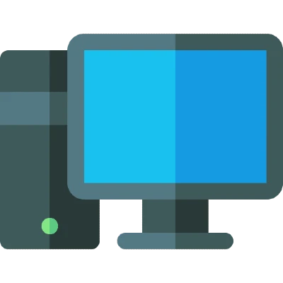
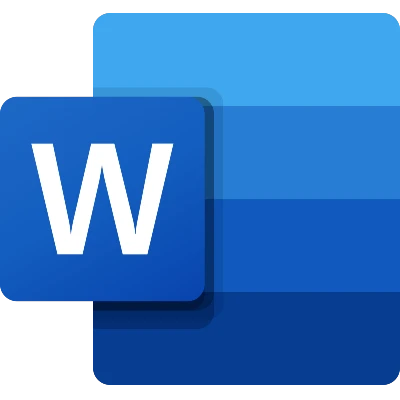
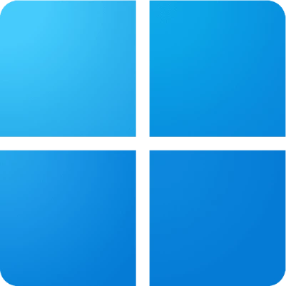
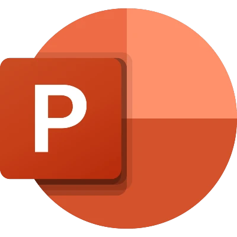
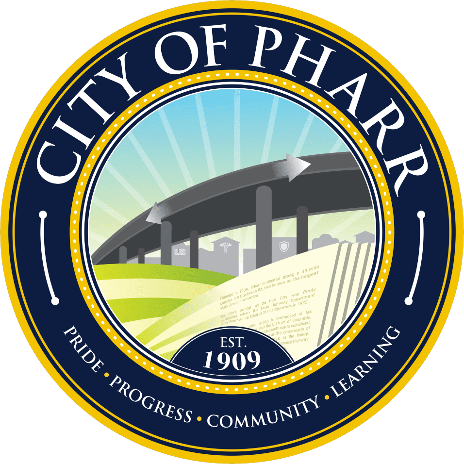

Welcome to the Pharr Library! We are dedicated to providing a wide range of books, movies, and resources for our community. Explore our collection and enjoy your visit!
| Contact Information | Address | Library Hours |
|---|---|---|
| Phone: (956)402-4650 | 121 E Cherokee Ave, Pharr, TX 78577 | Monday - Thursday: 9am - 8:45pm Friday & Saturday: 9am - 5:45pm Sunday: 1pm - 5:45pm |
Our mission is “Empowering Minds, Connecting Communities.” We strive to deliver efficient, innovative, and accessible library services that foster a thriving, safe, and sustainable community. Our department is committed to ignite curiosity, foster lifelong learning, and celebrate our community. Through our vibrant collections, engaging programs, and welcoming spaces, we empower individuals to explore, create and thrive.
| Computer Basic | Microsoft Word | Windows Basic | Microsoft Powerpoint |
|---|---|---|---|
|  |
 |
 |
 |
| Learn how to navigate, find and send files, use shortcuts, and do more in Windows. | If you’re new to computers or just want to update your skills, you’ve come to the right place. | Learn how to format text, save and share documents, modify line and paragraph spacing, use tables and columns, and do more with your documents. | Learn how to use themes and background styles, add pictures and clip art, modify charts and lists, and do more to create standout presentations. |
